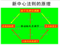

新中心法則
一、什麼是新中心法則？
- 椎動脈：向腦幹供血
- 腦幹：位於腦底部
- 迷走神經：起於腦幹，止於內臟
- 副神經：副神經核的雙重供血,支配斜方肌及胸鎖乳突肌
二、新中心法則的原理

三、操作機理
- 腦幹功能低下時
- 迷走神經功能低下
- 內臟功能異常
- 副神經的功能亢進
頸部肌肉緊張
頸部椎骨保持軸向安定
四、新中心法則的主要?容
- 第一，椎動脈是為生命中樞?延腦和腦幹供血的主要動脈，其機能狀態影響全身所有的生理與病理現象。其機能良好即為健康，機能不良即為病態。中醫學中的腎氣既相當於椎動脈的功能。
- 第二，椎動脈有一整套高效的調控系統，即通過調節向腦幹的供血，來達到影響腦幹的神經，特別是迷走神經，從而達到調節內臟各器官的作用。
- 第三，椎動脈內的血流調節是通過頸椎間關節的微小移動導致橫突管的直徑變化來實現的。
- 第四，橫突管的直徑變化，主要是在神經（特別是副神經）支配下的頸部及肩帶肌群的緊張性收縮來完成的，因此，頸椎的軸向安定是人類健康的最大需求。
- 第五，精神緊張、情緒刺激、頸部肌肉的發達程度，頸椎及其關節的機能狀態等是影響椎動脈機能的主要因素。即橫突管的直徑越安定，對健康就越有利，越不安定，對機體就越有害，並因此引起許多疾病。
- 第六，上肢運動，特別是肩帶機群的運動，對健康特別重要。長期或終生鍛煉肩帶肌群是非常重要的。
- 第七，脊椎動物生命衰老的主要原因在於椎動脈調控系統的機能低下。
五、實驗性破壞頸椎安定性
本實驗的目的：闡明椎動脈與疾病及健康的關係
方法：
- 化學法 用乳酸腐蝕項韌帶
- 物理法 切斷項韌帶 扭傷項韌帶
- 切斷迷走神經
- 切斷副神經
- 鉗閉椎動脈 a.半鉗閉 b.全半鉗閉 c.麻醉下
六、結果
可以作出各種動物模型
- 白血病，癌症，SLE，膠原病
- 糖尿病，高血壓，高血脂，動脈硬化
- 肝炎，肝硬化，腎炎
- 心臟病：心肌更塞， 心動過速
- 腦病：腦溢血，腦血栓，蛛網膜下腔出血
七、闡明疾病的原理
- 中醫學的合理性
- 實現中醫現代化
- 提出新的發病機理
- 關於衰老的理論
- 多病同理
總結
新中心法則的意義
- 闡明了衰老的原理
- 闡明了多數疑難疾病的原理
- 闡明了中醫藥的原理
- 為今後的中西醫融合奠定了理論基礎
日文/英文资料
- 新中心法則の要点
- 新中心法則の意義（１）
新中心法則は椎骨動脈の機能は人間のすべての生理及び病理的な現象と関係していることを示唆し、椎骨動脈の機能がよければ、元気、悪ければ、病気と生命力を決めているキーポイントであることを示した。
- 新中心法則意義（２）
中国の漢方医学の理論はエジプトのピラミット、マヤ文明と中国の易経の様な世界文明の最後の四大謎の一つで、従来から数多くの科学者の注目を集めている。
- 新中心法則及びその意義（3）
王 立石博士によりますと新中心法則は人間（脊椎動物も含む）生命の基本現象を解明する理論で、今まで分からない数多くの生命現象、例えば、人間はなぜ老化しなければならないですか？
- The New Central Paradigm and the Mechanism of its Operation
- 新中心法則による発癌メカニズムの解説